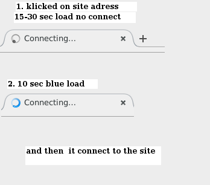
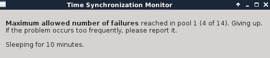

{kind=link}
just look at this! have someone that speed? i restart TOR many many times and allways speed go down. cant update my whonix
PS. Sometimes it go on 250kb/s (for 1 minute maximum) but then dropping again

just look at this! have someone that speed? i restart TOR many many times and allways speed go down. cant update my whonix
PS. Sometimes it go on 250kb/s (for 1 minute maximum) but then dropping again
Hi david
Unfortunately that can be normal for Tor network. Your connection speed will fluctuate depending on the circuit and network congestion. This has been compounded by recent events. This thread here has some info on this.
You can also use Arm Tor controller to change to a faster circuit.
See also:
have u EVER that speed like on my screenshot? i think never. thats a whonix bug i think
Yes.
Some times I have 0 B/s . Some times 500 Kb/s . Every once in a great while 1 Mb/s but only for a brief period .
No, its just how Tor is sometimes. Unfortunately some great things come with a price. With Tor, you can expect to have to sacrifice connection speed for anonymity. Its a small price to pay IMHO.

just look how i use whonix every day. do u have the same?
5-10 days ago was much faster but i dont know why it comes so slow. can u help?
i restart tor million times.
the connection just drops every 30 seconds and tor reloading.
and i have this report 
Good day,
Could be your ISP or government limiting Tor usage. Did you try pluggable transports?
Have a nice day,
Ego
Hi david
Maximum allowed number of failures reached in pool 1 (4 of 14)
I have also been receiving that warning every now and then. Usually when there is network congestion and Tor is having trouble building circuits. It can be frustrating at times. As mentioned previously you can use the Arm Tor controller. This will provide you with more information about whats going on with your Tor connections and may help in deciphering what problem you’re having if in fact there is one.
As @Ego mentioned another possibility, depending where you reside is your Govt or ISP could be censoring your Tor usage. If this is a problem you can use obfs4 bridges.
EDIT:
Another possibility is your entry guard changed. You could have had a faster entry guard, now a slow(er) one.
https://www.torproject.org/docs/faq.html.en#EntryGuards
https://blog.torproject.org/research-problem-better-guard-rotation-parameters
im dont live in cencored area.
i use +arm+ at the gateway and i see this warning
[ARM WARN] The torrc differs wrom what tors using. You can issue a sighup to reload the torrc values by pressing X.
-configuration value is missing from the torrc RunAsDaemon
(i use X but this warning dont hide)
[WARN] Skipping obsolete configuration option +ControlListenAdress+
what i can do whith it?
Hi david
[ARM WARN] The torrc differs wrom what tors using. You can issue a sighup to reload the torrc values by pressing X.
-configuration value is missing from the torrc RunAsDaemon
This is an Arm usability bug which is mentioned here in the Whonix Arm wiki page:
https://whonix.org/wiki/Arm#Arm_FAQ
See also:
https://trac.torproject.org/projects/tor/ticket/16459
what i can do whith it?
Short answer: Nothing for now, its a usability bug.
what i can do whith my SLOW connection? man the whonix site is downloading for 30-40 seconds. can u feel what is this work like that every day? 30 seconds to load SMALL PAGE.
thats not normal.
Hi david
5-10 days ago was much faster
For how long did you have a faster connection? 1 hour, 1 day, 5 days, 5 weeks…?
Are you receiving any errors? Do you have any errors with this command:
whonixcheck --verbose
Have you tried connecting to Tor from another location ( i.e. if you’re using a laptop)?
If you’re usng VirtualBox or KVM have you tried downloading Tor Browser onto your host and connected to Tor. Do you have the same slow connection issue?
If you use a VPN it can slow down your Tor connection. Did you recently add a VPN or change VPN exit servers? Back when I used a VPN there was a noticeable difference in connection speed ( for the better ) when I used Tor by itself.
What you can do is follow Obrand and Ego’s advice and test Tor speeds under different scenarios:
Then, at least you can try and track down the problem and isolate the problem to: location / VPN / guards / censorship by nation-state or ISP / whonix config (maybe) etc.
Given it was faster recently, sounds like you got crappy new guards during a standard rotation (they change every 9 months or so now). That’s not uncommon if you read in the forums i.e. sudden degraded performance.
It also appears the spooks are attacking the Tor network at large right now as a New Year’s gift to all Tor users, so some slower connections can be expected.
I have the same Problems since a week like uofn.
ef86
Hi ef86
Have you used the information provided in the thread to try to narrow down what what the problem is (if there is one)? Are you receiving any error messages?
Hallo 0brand
I used it. No i do not receiving any error messages.
ef86
Hi ef86
As torjunkie mentioned its not uncommon (especially lately) for users to have sudden degraded performance. For what its worth I’ve been having the same problems for well over a month. Quite coincidentally, I’m having connectivity issues as I write this post. Two days ago I could not complete system updates. Its very frustrating and even though it does sound tempting, I will not change my entry guard. That could be just what an attacker wants.
Hallo 0brand,
thanks for your words. Very nice, think we are all in the same situation.
ef86
If you read through some Tor tickets or mailing lists, you see stories like:
Some form of exhaustion attack on guards in general, whereby the spooks are having clients form many multiple connections to particular nodes, and then collapsing them all of a sudden, and then recycling this behaviour. No doubt this overloads those (guard) nodes, leading to poor connectivity for normal users.
I also read reports whereby it’s suggested that malicious guard nodes will likely cut off / drop connections for normal users who aren’t part of a set of IP addresses that are (most probably) being targeted for end-end traffic correlation attacks. This is why people can also get shitty connections that drop out all the time, or circuits collapse etc.
(Think yourself lucky in the second case, since they don’t care about confirming your Whonix posts and porntube habits  )
)
All in all, the shitter my connection, the more confident I feel.
This is of course counter-balanced with the “frustration hypothesis”, whereby they may attempt to make your Tor browsing so intolerable, that you are tempted to shift to a pwned guard that they have control over, simply because they want to see what you’re up to with greater precision.